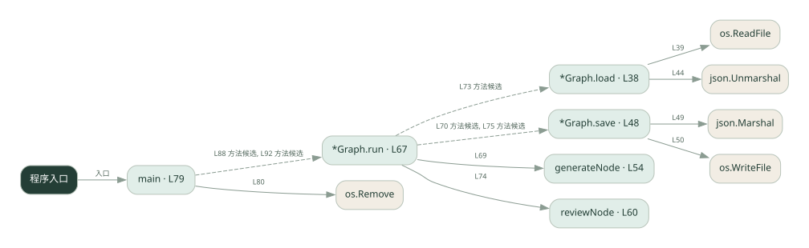

3-9 · 全课程第 49 节
持久化与暂停恢复
044.go
源码快照 2f5e5ec39dd2 · 静态解析 · 2026-09-10
01 / 要完成的事
生成草稿，保存状态，在人审处暂停，再带决定恢复执行。
02 / 为什么要做
人工不会立即回复，进程也可能重启；状态需要跨等待保留。
03 / 当前代码状态
自定义 Graph.load/save 用 JSON 文件保存状态，Graph.run 根据 resume 参数模拟暂停与继续。不是 LangGraph SDK，也不是 SQLite checkpoint。main 启动时删除旧 checkpoint，因此当前只演示同一进程内两次 run 的保存与恢复；跨进程恢复需调整入口。文件相对于启动工作目录。
主要展示本地计算、内存状态或模拟流程；是否写文件/启动子进程请看调用表。 本次只做静态解析，没有运行练习，也没有替你填写或修改原代码。
04 / 调用图
打开大图 ↗实线：源码中的直接调用；虚线：函数引用/注册、动态调用或按方法名推断的候选。L 是调用所在源码行号。箭头不表示执行顺序或每次必经；分支、循环、异步调度及框架内部调用需结合源码。灰色是外部/未解析目标，橙色是动态分发；省略 print、len 和常规容器操作以减少干扰。孤立函数可能尚未接入。

先从 main（程序入口） 出发，沿箭头找到本文件函数，再查看外部调用或动态分发。右侧调用清单保留所有静态调用点，能回到原文件逐行对照。
05 / 函数定位
| 函数 / 定义行 | 职责（源码注释） | 内部调用 |
|---|---|---|
*Graph.loadL38 | 以源码函数体为准；下列调用展示其依赖。 | os.ReadFile, json.Unmarshal |
*Graph.saveL48 | 以源码函数体为准；下列调用展示其依赖。 | json.Marshal, os.WriteFile |
generateNodeL54 | generateNode：节点 1 —— 生成内容（简化版，不真调 LLM） | 未发现显式函数调用（可能直接计算、读写状态或尚未实现） |
reviewNodeL60 | reviewNode：节点 2 —— 人审。decision = interrupt(...) 的返回值 = 恢复时 resume 传进来的值 | 未发现显式函数调用（可能直接计算、读写状态或尚未实现） |
*Graph.runL67 | run：跑图。resume=="" 表示第一次（在 review 前 interrupt 暂停，返回 false=没跑完）； | generateNode, g.save, g.load, reviewNode |
mainL79 | 以源码函数体为准；下列调用展示其依赖。 | os.Remove, fmt.Println, g.run, fmt.Printf |
这样做的优点
长流程可以分多次运行，审核决定能进入后续状态。
代价与局限
恢复时要避免重复副作用；本地演示不自动解决多用户隔离与并发写入。
适用场景
需要等待审批的长流程原型。
不宜直接照搬
未设计事务、身份与幂等却直接承载重要写操作。
动手检验理解
当前 main 会先删除旧 checkpoint。在副本中拆分首次运行与恢复入口，再检查重启后是否能够继续原草稿；原样重跑不能验证跨进程恢复。
有未实现位置时先预测，再补齐验证。能启动不等于逻辑正确。
查看全部 21 个静态调用 / 引用点
| 调用方 | 目标 | 源码行 | 类型 |
|---|---|---|---|
| *Graph.load | os.ReadFile | 39 | 调用 |
| *Graph.load | json.Unmarshal | 44 | 调用 |
| *Graph.save | json.Marshal | 49 | 调用 |
| *Graph.save | os.WriteFile | 50 | 调用 |
| *Graph.run | generateNode | 69 | 调用 |
| *Graph.run | g.save | 70 | 调用 |
| *Graph.run | g.load | 73 | 调用 |
| *Graph.run | reviewNode | 74 | 调用 |
| *Graph.run | g.save | 75 | 调用 |
| main | os.Remove | 80 | 调用 |
| main | fmt.Println | 83 | 调用 |
| main | fmt.Println | 84 | 调用 |
| main | fmt.Println | 85 | 调用 |
| main | fmt.Println | 87 | 调用 |
| main | g.run | 88 | 调用 |
| main | fmt.Printf | 89 | 调用 |
| main | fmt.Println | 91 | 调用 |
| main | g.run | 92 | 调用 |
| main | fmt.Printf | 93 | 调用 |
| main | fmt.Printf | 94 | 调用 |
| main | fmt.Println | 96 | 调用 |